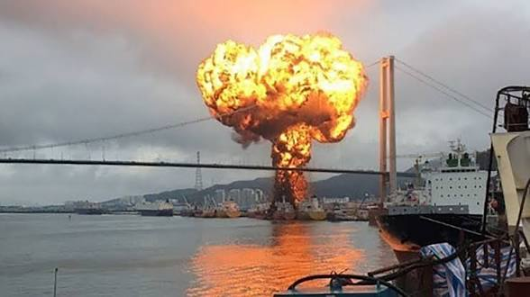
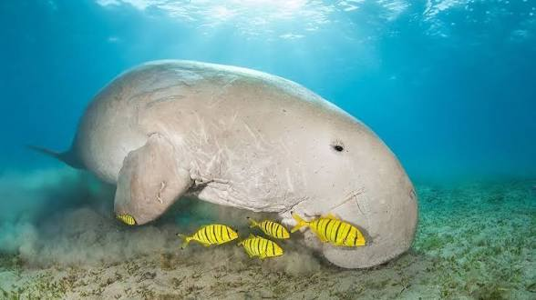
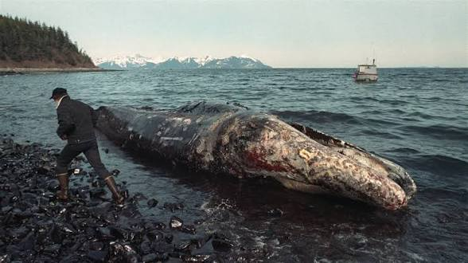
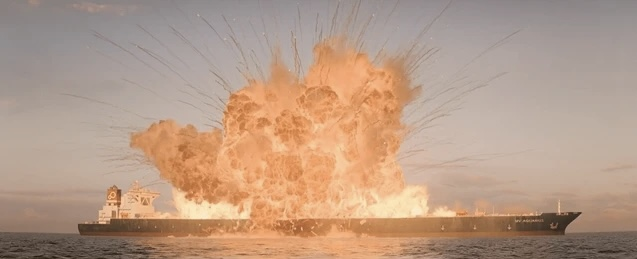
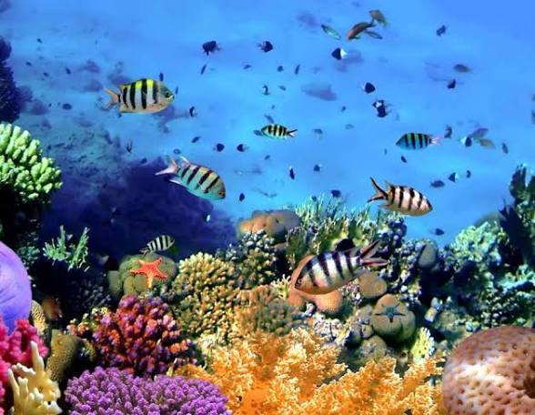
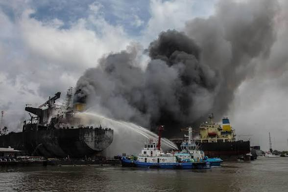
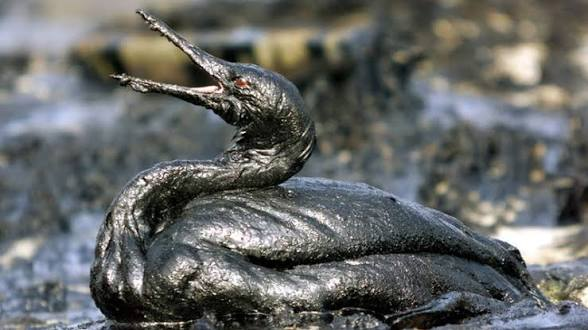

Les guerres ne s'arrêtent pas quand les fusils se taisent. Elles continuent de tuer — silencieusement, chimiquement, écologiquement — pendant des décennies. Ce que les médias comptent en pertes humaines et en milliards de dommages économiques n'est que la surface visible d'un désastre planétaire dont la planète, elle, ne peut pas se relever aussi vite que les bourses mondiales.
Les conflits en Ukraine, à Gaza et en Iran ne sont pas des accidents géopolitiques isolés. Ils sont les produits prévisibles d'un système fondé sur le contrôle des ressources, la compétition entre États au service d'intérêts économiques privés, et l'externalisation du coût humain et écologique de cette compétition vers les populations les plus vulnérables.



La guerre en Ukraine constitue aujourd'hui la plus grande source individuelle d'émissions carbone du pays — dépassant toute l'industrie nationale combinée. Les 230 millions de tonnes de CO₂ équivalent émises depuis février 2022 représentent l'équivalent des émissions annuelles complètes de l'Autriche. Les incendies de forêts provoqués par les combats ont ravagé 808 km² en 2022 et 772 km² en 2023, soit 21% des émissions totales de gaz à effet de serre ukrainiennes sur ces années.
La contamination des sols est catastrophique. Les obus d'artillerie, missiles et véhicules blindés libèrent du plomb, du mercure et de l'arsenic directement dans les terres agricoles. Quelque 40% du sol ukrainien est aujourd'hui affecté par l'érosion liée au conflit. Plus de 200 000 acres de terres ont été contaminées — un pays dont l'agriculture nourrissait une bonne partie du monde.




Les frappes israélo-américaines sur l'Iran ont immédiatement transformé le Golfe Persique en zone de risque écologique extrême. Plus de 85 grands pétroliers transportant des milliards de litres de pétrole brut se sont retrouvés bloqués dans le détroit d'Ormuz lors des premières frappes. Greenpeace Allemagne a averti qu'un seul déversement majeur dans ce couloir marin pourrait endommager irrémédiablement un habitat marin déjà fragilisé par des décennies d'exploitation pétrolière intensive.
À Gaza, le PNUE a documenté une contamination sans précédent des sols, de l'eau et de l'air. Les 39 millions de tonnes de débris d'engins explosifs — soit plus de 107 kilogrammes par mètre carré de territoire — contiennent des métaux lourds et des contaminants chimiques qui s'infiltrent dans les nappes phréatiques et la Méditerranée orientale. Les systèmes de désalinisation et de traitement des eaux usées, reconstruits laborieusement après des conflits précédents, ont été anéantis.
Ces guerres ne sont pas des accidents. Elles sont le produit logique d'un système économique dont la survie dépend du contrôle des ressources naturelles — pétrole, gaz, terres arables, eau, minéraux. Derrière chaque conflit contemporain se trouvent des intérêts économiques privés qui profitent de la déstabilisation, de la reconstruction et du contrôle des flux énergétiques mondiaux.
Le lien est direct et documenté :
Un système de gouvernance fondé sur le bien-être universel — comme l'Universalité — n'a structurellement aucun intérêt à déclencher des guerres pour des ressources. La coopération dans l'accès aux ressources remplace la compétition. La durabilité écologique devient une contrainte non négociable. C'est là la différence fondamentale.
La guerre est le capitalisme à son état le plus pur : la maximisation du profit privé au prix du sacrifice collectif — humain, social, et maintenant planétaire.
Chaque obus tiré est une décision économique. Chaque infrastructure énergétique frappée est un actif à reconquérir. Chaque réfugié est une externalité non comptabilisée. Et chaque espèce qui disparaît dans un golfe mazouté n'a pas de tribunal pour réclamer justice.
🌍 L'Universalité ne se construit pas avec des missiles. Elle se construit avec la décision collective que la vie — humaine et non-humaine — vaut plus que le contrôle des ressources.